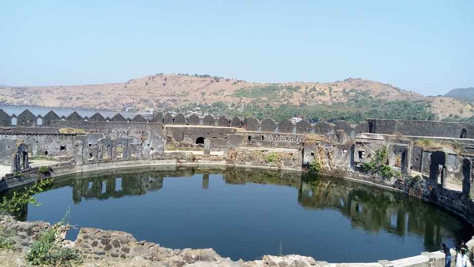

|
|
|
 |
The word Janjira is not native to India, and may have originated after the Arabic word Jazeera, which means Island. Murud was once known in Marathi as Habsan ("of Habshi" or Abyssinian). The name of the fort is a concatenation of the Konkani and Arabic words for Island, "morod" and "jazeera". The word "morod" is peculiar to Konkani and is absent in Marathi
Raja Ram Rao Patil was Patil of Janjira Island and a chief of Kolis who established and/or built this island in the 16th century for Kolis to live peacefully away from pirates. After gaining permission from the Sultan of the Ahmadnagar Sultanate, he built the island but later refused to obey the orders of the Sultan. So the Sultan sent his Admiral Piram Khan to capture the janjira. Due to the castle's fortifications, Piram Khan was unable to attack the island conventionally, so he disguised himself as a merchant and requested to stay a night at janjira and permission was granted. Piram Khan hosted a party under the guise of thanking the patil. When the Patil and kolis were intoxicated, Piram Khan attacked them with his men who had been hidden in barrels and captured the island.
Murud-Janjira Fort is situated on an oval-shaped rock off the Arabian Sea coast near the port town of Murud, 165 km (103 mi) south of Mumbai. Janjira is considered one of the strongest marine forts in India. The fort is approached by sailboats from Rajapuri jetty. Janjira from the outside The main gate of the fort faces Rajapuri on the shore and can be seen only when one is about 40 feet (12 m) away from it. It has a small postern gate towards the open sea for escape. Entry Gate into Murud Janjira Fort. Accessible by ferry. The fort has 26 rounded bastions, still intact. There are many cannons of native and European make rusting on the bastions. Now in ruins, the fort in its heyday was a full-fledged living fort with all the necessary facilities, e.g., palaces, quarters for officers, mosque, two small 60-foot-deep (18 m) natural fresh water lakes, etc.[8] On the outer wall flanking the main gate, there is a sculpture depicting a tiger-like beast clasping elephants in its claws. The sculpture on the main gate The palace of the Nawabs of Janjira at Murud is still in good shape.[citation needed] A special attraction of this fort are 3 gigantic cannons named Kalalbangdi, Chavri and Landa Kasam. These cannons were said to be feared for their shooting range.[9] Another gate to the west is sea-facing, called 'Darya Darwaza'. There is also another fortress, named Ghosalgad, which is located on top of the hill around 32 km (20 mi) east of Murud-Janjira, that was used as outpost for the rulers of Janjira.
During its heyday, the island fort boasted 572 cannons.[11] Visitors can gain access to the Janjira fort from Rajapuri, a small village on the coast. After a short ride in a small boat, one can enter the fort through the main entrance. The fort is oval shaped instead of the usual oblong or square shape. The fort wall is about 40 feet high and has 19 rounded porches or arches, some of which still have cannons mounted on them, including the famous cannon Kalaal Baangadi. These cannons were largely responsible for repelling oncoming enemies from the sea. Inside the fort walls are the ruins of a mosque, a palace and bath with water channeled from streams, evidence that royal ladies occupied the quarters. A deep well, still functional, provides fresh water despite the fort being surrounded by salt water. On shore is a luxurious cliff-top mansion, the Palace of the Nawab. Built by the former Nawab of Janjira, it commands a panoramic view of the Arabian sea and the Janjira sea fort.[citation needed] According to another record,[vague] the Abyssinian Sidis established the Janjira and Jafarabad state in early 1100.[12] Archaeological Survey of India noticeboard at fort entrance According to accounts written by the Portuguese Admiral Fernão Mendes Pinto, the Ottoman fleet that first arrived in Aceh prior to the Ottoman expedition to Aceh led by Kurtoğlu Hızır Reis included 200 Malabar sailors from Janjira to aid the region of Batak and Maritime Southeast Asia in 1539.[13] Later, in 1621, the Siddis of Janjira became exceptionally powerful as autonomous state to the point that the commander of Janjira, Siddi Ambar the Little, successfully defied his overlord Malik Ambar's attempt to replace him. Siddi Ambar the Little is accordingly considered the first Nawab of Janjira state.[14] The island fortress was under control of Adil Shahi dynasty until the reign of Ibrahim II where Janjira fort was lost to the Siddis.[15] Major historical figures from Murud-Janjira include men such as Sidi Hilal, Yahya Saleh and Sidi Yaqub. During the rule of Sultan Aurangzeb, Sidi Yaqut received a subsidy of 400,000 rupees. He also owned large ships which weighed 300–400 tons. According to the record these ships were unsuitable for fighting on the open sea against European warships, but their size allowed for transporting soldiers for amphibious operations.[16] Despite their repeated attempts, the Portuguese, the British and the Marathas failed to subdue the power of the Siddis, who were themselves allied with the Mughal Empire. For example, 10,000 soldiers from Moro Pandit were repulsed by Janjira's army in 1676.[17] The Marathas led by Shivaji attempted to scale the 12-meter-high (39 ft) granite walls; he failed in all his attempts. His son Sambhaji even attempted to tunnel his way into the fort but was unsuccessful in all his attempts.[18] He built another sea fort in 1676, known as Padmadurg or Kasa fort, to challenge Janjira. It is located northeast of Janjira. Padmadurg took 22 years to build and is constructed on 22 acres of land. Janjira ruins The small pond inside Janjira fort In the year 1736, Siddis of Murud-Janjira set out in a battle with the forces of Maratha Peshwa Baji Rao. On 19 April 1736, Maratha warrior Chimaji Appa attacked the gathering forces in the encampments of the Siddis near Rewas.[19] When the confrontation ended, 1,500 Siddis, including their leader Siddi Sat, were killed. Peace was concluded in September 1736, but the Siddis were confined to only Janjira, Gowalkot, and Anjanwel, thus their power greatly reduced. However, Janjira remained unconquered until it became part of Indian territory after independence from the British in 1947.